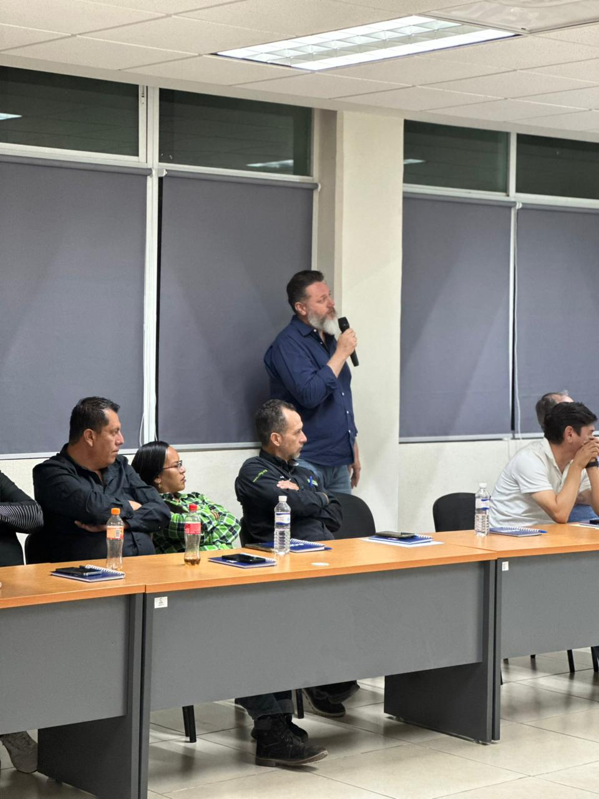

Innovación
8 MAYO 2026
¡La innovación también se construye!
El Centro de Innovación tecnológica se convirtió en el espacio de diálogo para el Colegio de Arquitectos del Valle del Guadiana A.C., quienes llevaron a cabo su sesión mensual de mayo. Nos encanta ser la sede donde los expertos del diseño y la construcción proyectan el crecimiento de nuestra ciudad. Ver a profesionales comprometidos compartiendo conocimiento en el CIT nos motiva a seguir siendo el centro de conexión para los líderes de cada sector.